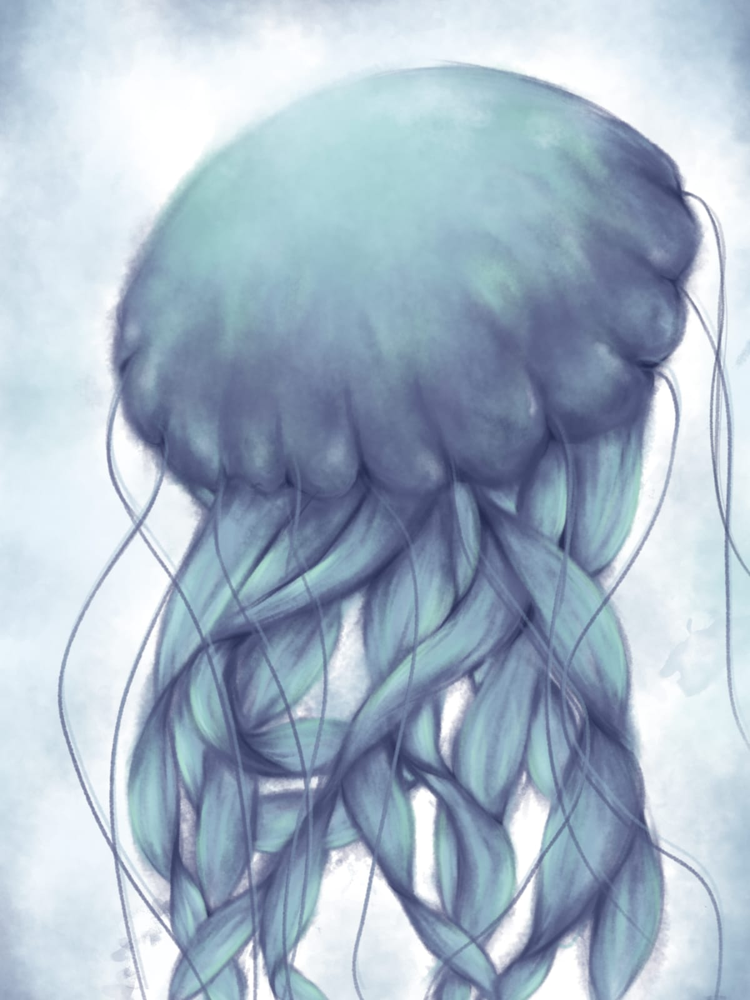

karya pada gambaran ini merupakan ilustrasi digital menggambarkan sebuah mahluk yang tidak biasa layaknya sebuah mahluk fantasi berbulu lembut, bewarna ungu, dan melingkar tenang di tengah kegelapan, karya ini dibuat di aplikasi digital ibispaintx dan hasil gambaran karya ini 6:15 jam

karya berupa sebuah gambaran ilustrasi digital ubur ubur, hanya pengambaran sebagai karya gambaran saja, karya ini dibuat di aplikasi digital ibispaintx dan hasil gambaran ini 3:29 jam

Gambaran berupa ilustrasi digital yang menggambarkan mahluk seram berupa kemiripan dengan hewan kucing yang hanya berupa karya Dark Art, karya ini dibuat di aplikasi digital ibispaintx dan hasil gambaran ini 57:08 jam

karya gambar ilustrasi digital dengan pegunungan dan perumputan di malam yang sunyi hanya ketenangan, karya ini dibuat di aplikasi digital ibispaintx dan hasil gambaran ini 4:03 jam

karya ilustrasi digital menggambarkan satu ekor ikan yang hanya ditempat perairan laut, karya ini dibuat di aplikasi digital ibispaintx dan hasil gambaran ini 2:12 jam

Sebuah karya gambaran ilustrasi digital yang hanya menunjukkan sebuah mahluk entitas yang tidak diketahui menatap dengan kekosongan, karya ini dibuat di aplikasi digital ibispaintx dan hasil gambaran ini 0:49 jam

karya gambaran ilustrasi digital dengan gambaran sebuah sesosok monster laut yang sedang berburu mangsa, karya ini dibuat di aplikasi digital ibispaintx dan hasil gambaran ini 0:41 jam